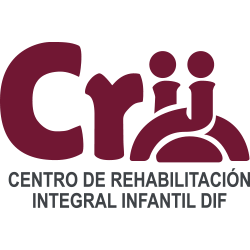

Impulsar e institucionalizar políticas de Inclusión Social, Rehabilitación Integral y Educación Especial para mejorar la calidad de vida de niñas, niños y adolescentes con discapacidad del estado de Puebla, respetando los derechos de la niñez y del adolescente en situación de vulnerabilidad.